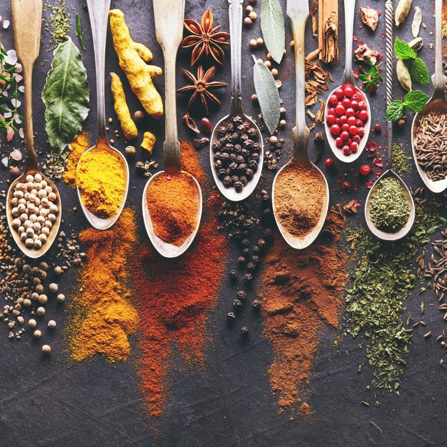

Dengan kata lain, semua jenis tanaman yang mengandung bahan atau zat aktif yang berguna untuk pengobatan bisa digolongkan sebagai herbal. Herbal kadang-kadang disebut juga sebagai tanaman obat, sehingga dalam perkembangannya dimasukkan sebagai salah satu bentuk pengobatan alternatif.
Pengobatan Herbal masih banyak yang harus di teliti lebih lanjut, dikarenakan kebanyakan dari penelitian herbal secara medis belum banyak yang melibatkan percobaan terhadap tubuh manusia.
Obat Herbal
Obat herbal adalah obat yang bersifat organik atau alami, sama seperti tubuh kita. Obat herbal murni diambil dari saripati tumbuhan yang mempunyai manfaat untuk pengobatan, tanpa ada campuran bahan kimia buatan (sintetis) dan tanpa campuran hewan.
Jika suatu obat telah mengandung unsur hewani maka ia tidak dapat disebut sebagai herbal lagi, melainkan masuk dalam kategori obat tradisional/jamu.
Obat Herbal harus berasal dari tumbuhan (nabati) misalnya jahe, temulawak, kunyit, bawang putih, ginseng dan lain-lain.
Contoh unsur hewani yang ada didalam Obat Tradisional/jamu adalah Telur dan Tripang.
Cara Mengkonsumsi Obat Herbal Dengan Aman
Obat herbal banyak digunakan oleh masyarakat Indonesia untuk mengatasi gejala atau penyakit tertentu. Meski obat ini terbuat dari bahan alami dan sudah sejak lama digunakan, Anda perlu mengetahui cara mengonsumsi obat herbal yang aman agar terhindar dari efek sampingnya.
 Obat-obat Herbal.Agar terhindar dari efek samping yang berbahaya, ikutilah tips-tips berikut ini saat mengonsumsi obat herbal:
Konsumsi obat herbal tidak boleh sembarangan, apalagi jika digunakan untuk mengobati penyakit. Agar tidak mengalami efek samping yang berbahaya, terapkan cara-cara di atas untuk mengonsumsi obat herbal dengan aman.
· Images by Pinterest